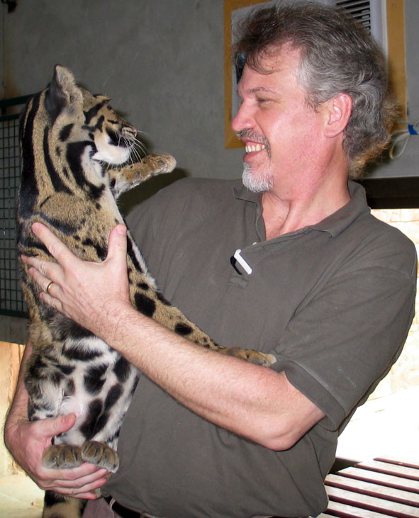

HOME
Main page
ABOUT
Design For Life Michael Graetz
PROJECTS
Current Archive
WRITING
Read online
LINKS
Partners Institutions
CONTACT

Curriculum Vitae
Michael Graetz B.Arch, M.Arch, ASIA
Architect and Zoological Exhibit Designer Now an independent consultant, Michael Graetz spent nearly 20 years with Singapore Zoo as an architect and exhibit designer. Starting as the zoo's resident architect, he became a Director in 2000, heading the Zoo?s Creative Design Team (CDT).
More than 100 million dollars has gone into developments by Singapore Zoological Gardens (including the Night Safari) and Mike oversaw around three quarters of that investment. As the pace of development increased through the 1990s, additional designers were engaged and Mike became the head of the Creative Design Team.
Mike launched Design For Life in 2004
His work in Singapore Zoo has made Mike a highly experienced zoo designer, combining design skills with special insight into the zoological and operational needs of successful zoos.
Singapore is famous for having the world's first zoological park dedicated to nocturnal wildlife, which is open only at night - the Night Safari. Mike was a key member of the team that developed the Night Safari concept. Among other major projects Mike handled are Fragile Forest, the award-winning Hamadryas Baboon ? The Great Rift Valley of Ethiopia, and Elephants of Asia. These developments contributed to the string of tourism awards received by the Zoo and Night Safari throughout this period.
Singapore Zoo was conceived in the early 1970s as the 'Open Zoo' to reflect a conscious break with the traditional zoo built around cages and indoor displays. By the late 1990s, this idea was so well accepted among world zoos that it no longer set Singapore apart. The major projects embarked upon then were part of a process aimed at modernising the Zoo, reinventing it as a unique tourist attraction and maintaining its place at the 'cutting edge' of zoo design.
Key to this was the master re-development plan produced in the late 1990s with the tag line, ?Journeys to Wild Places?. Mike and his team subsequently organised a series of creative design workshops to kick start the projects outlined in the Master Plan. This method of planning and design by workshop proved a fast and effective methodology that spurs creativity and innovation. As Director of the CDT, Mike led a team of up to four designers with two support staff and coordinated a diverse array of local and foreign consultants brought in for specific projects or gathered for events such as the workshops to ensure the high level of innovation was maintained.
Over the years of Mike?s tenure, Singapore Zoo became sought after for its design expertise and consultancy became an increasing activity. This is due not least to the participation of Mike as designer, coordinator and team leader. He has worked on projects throughout Asia ? in Indonesia, China, India, Cambodia, Seychelles and U.A.E.
Mike obtained a Bachelor of Architecture from the University of South Australia in 1982. In 1995 he was awarded a Master of Architecture degree by dissertation from the National University of Singapore on zoo exhibit design and its role in the social objectives of zoological gardens.
On joining Singapore Zoo in 1984, he held the post of Architect and became first Head of the CDT and in 2000 a Director of Wildlife Reserves Singapore, the company formed when the Zoo merged with Jurong Bird Park. He has participated in ongoing staff training programmes of WRS; introducing keepers to the principles of exhibit design, and organised design workshops for SEAZA, the South East Asia Zoo Association.
Education
1982 B.Arch. South Australian Institute of Technology (University of South Australia)1995 M.Arch. National University of Singapore
Employment
2004 Principal, Design For Life, Singapore2000 Director, Creative Design Team, Wildlife Reserves Singapore
1995 Head, Creative Design Team, Singapore Zoological Gardens
1984 Architect, Singapore Zoological Gardens
1983 Architect, C.P. Lee & Partners, Singapore
Professional Memberships
Associate Member, Singapore Institute of ArchitectsAssociate Member, Australasian Regional Association of Zoological Parks and Aquaria, ARAZPA
Relevant zoo design experience
Singapore Zoological Gardens ? selected projects
General facilities
- Staff Quarters: design and construction supervision
- New Zoo Entrance: project management
- 'Balinese' Toilets: design and overseeing implementation
- Restaurants in the Wild: project management
Animal Exhibits
- Amphitheatre: design and project management
- Children's World: Animal Land and Playland: project management
- Sealion and penguin: design and project management
- Komodo dragon: design and project management
- Snake House renovations: design, documentation and project management
- Snake walk-through: design, documentation and project management
- Proboscis Monkey: design, documentation and project management
- Primate Kingdom: design and project management
- Australian Fauna Park: design, documentation and project management
- Fragile Forest: design and project management
- Treetops Trail: project management
- Ethiopian Experience: concept design and project management
- Elephants of Asia: themed concept design and project management
- Veterinary Hospital: conceptual design
- S. E. Asian Rainforest: design development
Night Safari
The Night Safari is the first such zoological park in the world. It opened in 1994 and cost S$70m. A daring innovation made possible by a new way of thinking about nocturnal animal display. Mike was an integral member of the design team and designed a number of later additions and improvements.Singapore Zoological Gardens Consultancy
- Bannerghatta Night Safari, Bangalore, India: feasibility study for a night zoo within the national park
- New Zoo for Dizzee World, Chennai, India: concept plan for a private zoo
- Praslin Island, Seychelles: eco-tourism study
- New Surabaya Zoo, Indonesia: master plan
- New zoo at Siem Reap, Cambodia: feasibility study
- Chime Long Night Zoo, Guangdong, China: master planning, concept design and construction observation
- Giant Salamander and Reptiles Exhibits, Xiangjiang Safari Park, Guangdong, China: schematic design
- Bintan Island, Indonesia: conceptual design for a ?managed wildlife sanctuary?
- Shikar Night, Hyderabad, India: concept plan and financial analysis for a night safari
- New Dubai Zoo: Advisor on zoo design to the Dubai Municipality
Design For Life Consultancy Pte Ltd
- Panda Breeding Centre, Chengdu, China: design competition entry
- Pygmy Hippo, Singapore Zoo: concept plan
- Marmoset, Changi International Airport, Singapore: conceptual design
- Putrajaya Bird Park, Kuala Lumpur, Malaysia: signage programme layout and concept design
- Nature Information Centre for Orang Utan rehabilitation reserve, Rasa Ria Resort, Kota Kinabalu Sabah, East Malaysia: design development
- Doi Tung Zoo, Chiang Rai Province, Thailand: redevelopment proposal
- Walkthrough Aviary and Small Animal exhibits, Cotai Strip, Macau, PRC: conceptual design
- Mumbai Zoo, India: conceptual master plan
- Greater Noida Night Safari, New Delhi, India: master planning workshop
- Constructed wetlands for private residence, Manila, Philippines: detailing and site over sight
- Elephant exhibit, Twycross Zoo, England: concept plan
- Safari Nusantara, Bintan, Indonesia: concept plan
- Night Sky Hunters, Sentosa, Singapore: conceptual design
- New Dubai Zoo, Mushrif Park, Dubai, UAE: Preliminary Design
- Twycross Zoo: Restaurant-viewed Snow Leopard and Shore Birds exhibits for new Entrance, Design Development
- Rabat Zoo, Morocco: Concept Plan, sections
- Leofoo Village theme park, Taiwan: bird show ? facilities design, show design, training and presentation
- Equatorial Rainforest exhibit, Taipei City Zoo, Taiwan: Master planning, design, documentation and construction over sight
- Albustan Wildlife Breeding Centre, UAE: redevelopment plan
- Lahore Wildlife Park, Pakistan: conceptual master plan
- Dubai Zoo: 1st prize, design competition,2007
© Design For Life Consultancy Pte Ltd